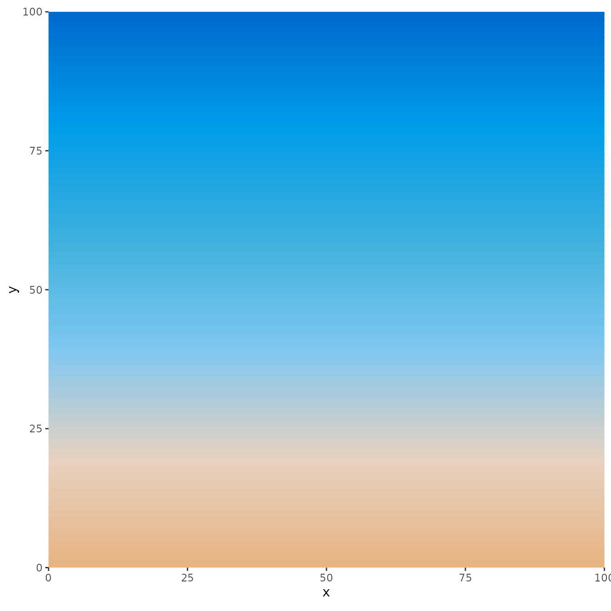
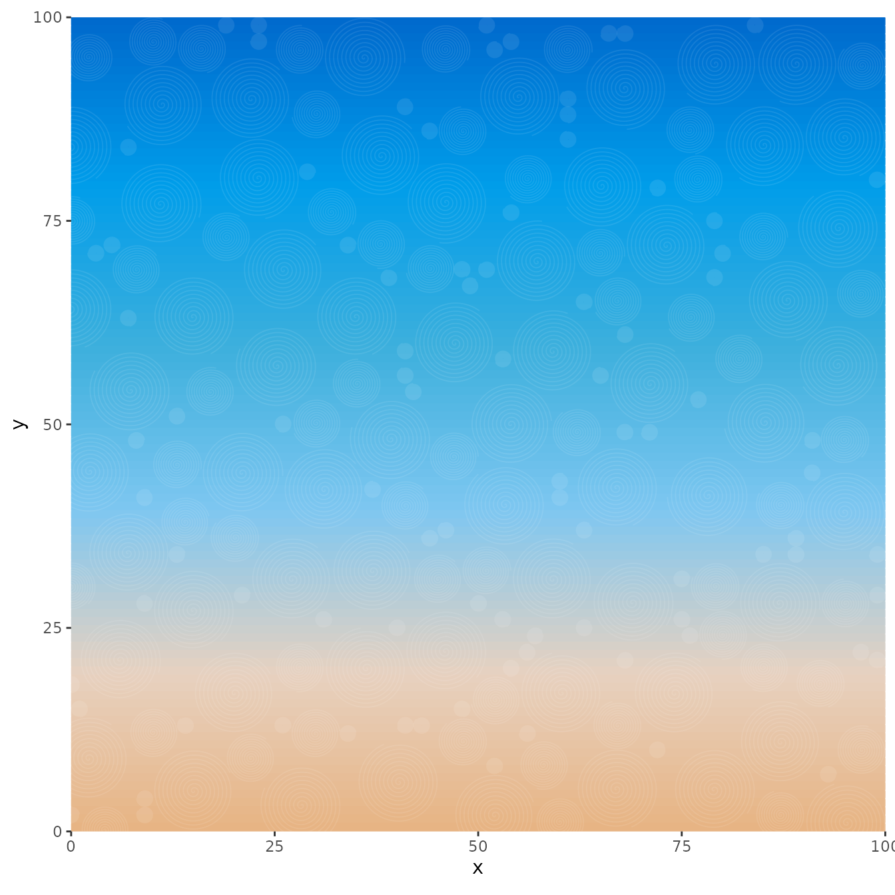
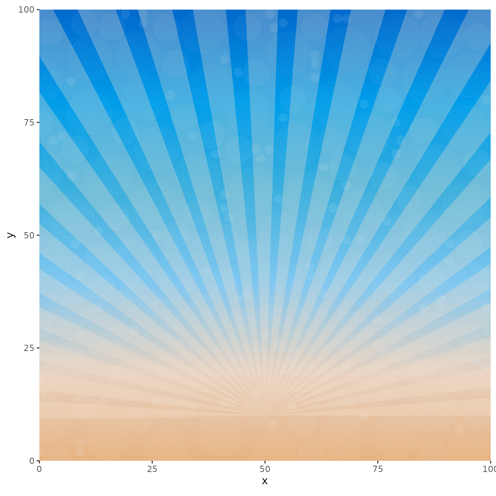
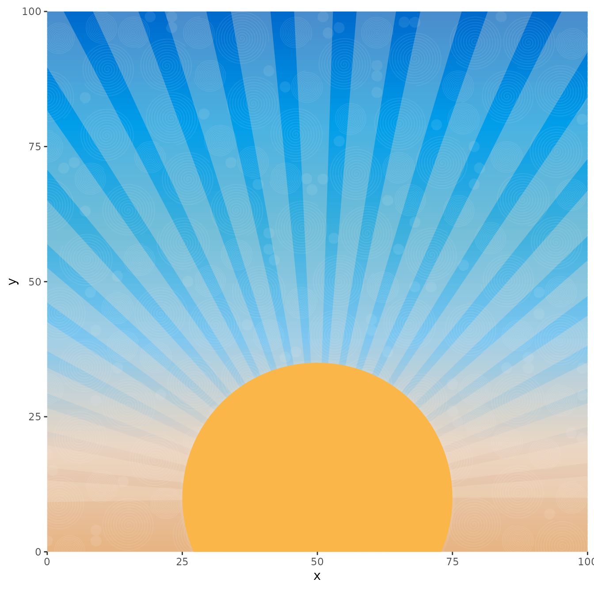

Introduction
So, it’s great to have different functions like
rotator(), circle_data(), and
art_pals(), but how exactly can these functions help
beginners become generative artists? The inspiration behind artpack was
to provide a way to bring the process of creating generative art data
closer to R users who had always wanted to explore generative art but
had never fully understood how to make it happen. This vignette will
serve as an example of how to create a generative art piece with artpack
that’s a bit more involved than just creating a single shape from
scratch. Note that this isn’t meant to serve as a general tutorial on
generative art, but rather a simple showcase of how one might use
artpack to create and complete a generative art piece.
For Beginners
It can be discouraging to see established generative artists share their final works without revealing the coding process behind them. artpack addresses this by serving as both a tool for generative artists and a resource for learning. It provides the data needed to create specific geometric shapes while helping aspiring artists “think outside the ggplot grid” and enhance their generative art workflow.
Get Inspired
The first step in creating any art piece is to get inspired! For this vignette, we’ll draw inspiration from a classic retro sunset design featuring:
- A large orange sun in the center.
- Radiating sun rays across a gradient sky (made of blue and orange)
- Stylized wavy layers below the sun representing water in teal and blue tones
- An overlaid artistic pattern to give the sky a textured look
Remember, when searching for inspiration, the aim isn’t to replicate every image you come across pixel by pixel. Instead, it’s about interpreting and drawing inspiration from it to form a general idea of what we can create for our own image. In this instance, let’s craft a sunset with waves of water and a pattern of sun rays emerging from the sun. A helpful way to think about creating art with ggplot is to imagine that you’re building a collage from the “first” layer all the way from the back (background), to the “last” layer in the front (foreground).
For this image, let’s create five layers:
- Layer 1 (Bottom): The gradient of colors that represent the sky.
- Layer 2: An artistic overlay to give the sky some ‘depth’.
- Layer 3: The sun rays that are coming from the sun.
- Layer 4: The sun.
- Layer 5 (Top): The waves of water.
Creating the Data
Layer 1 (The Sky)
To create a gradient, we’ll need a row of horizontal bars assigned to
different colors. Using ggplot2’sgeom_segment() for this
can save on memory (as opposed to creating the bars yourself).
geom_segment() needs 4 values: x,
xend, y, and yend. So we’ll
create a data frame with those data points. We’ll use the
art_pals() function to assign colors to the data we create.
We also need to decide how many bars we want to have in the image, but
before we do that, let’s determine the size of our canvas. To keep
things simple, let’s make our x and y limits the same.
c(0, 100).
# Library Load in-------
library(artpack)
library(tibble)
library(dplyr)
library(purrr)
library(ggplot2)
# Set canvas size#
x_lim <- c(0, 100)
y_lim <- x_lim
# Set seed for reproducibility
set.seed(1000)Next, let’s see if we can get the perfect size bars to create the
illusion of a sky gradient. Let’s try 100 to start. This means we’ll
also need 100 colors to apply to each bar. art_pals() can
be used for this. We’ll use the artpack color palette
"beach" for the sky.
After we have the data frame together, we can start building our ggplot to see how the data is looking on the plot:
# Sky Specs----
n_sky_bars <- 100
vec_sky_colors <- art_pals("beach", n_sky_bars)
df_sky_bars <-
tibble(
x = x_lim[1], # Horizontal bars means the x value is constant
xend = x_lim[2], # Horizontal bars means the xend values is constant
y = seq(y_lim[1], y_lim[2], length = n_sky_bars),
yend = y, # Horizontal bars means yend is the same as y
color = vec_sky_colors
)
# Start the ggplot
df_sky_bars |>
ggplot(aes(x,y)) +
geom_segment(
aes(xend = xend, yend = yend),
color = df_sky_bars$color,
linewidth = 4 #Tweak the bar thickness here if needed.
) +
coord_equal(xlim = x_lim, ylim = y_lim, expand = FALSE)
Layer 2 (The Artistic Overlay)
This layer may look the most complex on the canvas, but can be done
easily with artpack. For the overlay, let’s add some light, transparent
swirls to give the sky some texture. We can use the
packer() function for this:
# Make the data
df_overlay <-
packer(
n = 300,
min_x = x_lim[1],
max_x = x_lim[2],
min_y = y_lim[1],
max_y = y_lim[2],
color_pal = "#F5E0CD",
circle_type = "swirl"
)
#> ⠙ Sampling for big-sized circles started
#> ✔ Sampling for big-sized circles started [1s]
#>
#> ℹ Big-sized circles complete!
#> ✔ Big-sized circles complete! [15ms]
#>
#> ⠙ Sampling for medium-sized circles started
#> ℹ Maximum sampling reached for medium-sized circles!
#> ⠙ Sampling for medium-sized circles started✔ Sampling for medium-sized circles started [4.4s]
#>
#> ℹ Medium-sized circles complete!
#> ✔ Medium-sized circles complete! [13ms]
#>
#> ⠙ Sampling for small-sized circles started
#> ✔ Sampling for small-sized circles started [1.2s]
#>
#> ℹ Small-sized circles complete!
#> ✔ Small-sized circles complete! [35ms]
# And add it to the plot
df_sky_bars |>
ggplot(aes(x,y)) +
geom_segment(
aes(xend = xend, yend = yend),
color = df_sky_bars$color,
linewidth = 4
) +
geom_path(
data = df_overlay,
aes(group = group),
color = "#ffffff",
linewidth = .3,
alpha = .09
) +
coord_equal(xlim = x_lim, ylim = y_lim, expand = FALSE)
Layer 3 (The Sun Rays)
For this layer, we’re going to make 1 triangle that will originate from the center of the sun. This will require a little bit of manual work and some trial and error, but after we have one triangle, we can easily iterate and rotate it to create the sun rays if we know how many rays we want:
# Sun rays Specs----
n_sun_rays <- 50
# The rays angles
vec_ray_angles <- seq(0, 180, length = n_sun_rays)
# The ray groups
vec_ray_groups <- group_numbers(vec_ray_angles, prefix = "ray", sep = "_")
# The fill colors
vec_ray_fills <- rep_along(vec_ray_groups, c("#F5E0CD", NA))
# Data for One sun ray
# using a tribble for manual shapes can be helpful to keep the correct coords together
df_sun_ray <-
tribble(
~x, ~y,
50, 10, # Where the center of the sun will be
175, 10, #trial and error arbitrary x coord that covers the image fully
175, 20,
50, 10
)
# Ray options to iterate through
lst_ray_opts <-
list(
vec_ray_angles,
vec_ray_groups,
vec_ray_fills
)
# Create the data frame
# Note that purrr is this artist's preferred method of iteration, but you do you!
# You want those for-loops?? go ahead and get loopy!
df_sun_rays <-
pmap(lst_ray_opts,
~df_sun_ray |>
rotator(x, y, angle = ..1, anchor = c(50, 10)) |>
mutate(
group = ..2,
fill = ..3
)
) |>
list_rbind()
# Add to the plot
df_sky_bars |>
ggplot(aes(x,y)) +
geom_segment(
aes(xend = xend, yend = yend),
color = df_sky_bars$color,
linewidth = 4
) +
geom_path(
data = df_overlay,
aes(group = group),
color = "#ffffff",
linewidth = .3,
alpha = .09
) +
geom_polygon(
data = df_sun_rays,
aes(group = group),
fill = df_sun_rays$fill,
alpha = .3
) +
coord_equal(xlim = x_lim, ylim = y_lim, expand = FALSE)
Layer 4.1 and 4.2* (The Sun)
This layer will be simple to make as it’s just a circle. Based on the
coordinates for our sun rays, we know that the center of our sun will be
at c(50, 10). We can also determine the size of the sun by
setting the radius. We can also include some color options.
Because we want the outline of the sun to blend in with the sun rays from the previous step, we’ll actually add 2 layers of
df_sunto the plot. One with the lightly transparent sun border that will blend in with the sun rays from the previous layer and with the filled in yellow color of the sun.
# Make a circle----
df_sun <-
circle_data(
x = 50,
y = 10,
r = 25,
color = "#F5E0CD",
fill = "#FAB649"
)
# And add the two layers to the plot
df_sky_bars |>
ggplot(aes(x,y)) +
geom_segment(
aes(xend = xend, yend = yend),
color = df_sky_bars$color,
linewidth = 4
) +
geom_path(
data = df_overlay,
aes(group = group),
color = "#ffffff",
linewidth = .3,
alpha = .09
) +
geom_polygon(
data = df_sun_rays,
aes(group = group),
fill = df_sun_rays$fill,
alpha = .3
) +
geom_path(
data = df_sun,
color = df_sun$color,
alpha = .1,
linewidth = 2
) +
geom_polygon(
data = df_sun,
fill = df_sun$fill
) +
coord_equal(xlim = x_lim, ylim = y_lim, expand = FALSE)
Layer 5 (The Water Waves)
This last layer isn’t too bad, but does require some spec
setup. Looking at the ggplot we have, we’d ideally want the “waves” of
water to stay roughly below x = 10. We can pick the number
of waves we want, then do some iteration with wave_data()
to create an “ocean”:
# Wave specs----
# Number of waves
n_waves <- 400
# Starting points of the waves (randomized)
vec_wave_starts <- sample(seq(-75,75, l = 50), n_waves, replace = TRUE)
# Length of waves (randomized)
vec_wave_lengths <- vec_wave_starts + sample(seq(25,100, l = 30), n_waves, replace = TRUE)
# Sizes of waves (randomized)
vec_wave_sizes <- sample(seq(1, 3, l = 20), n_waves, replace = TRUE)
# frequency (humps) of each wave (randomized)
vec_wave_freqs <- sample(1:5, n_waves, replace = TRUE)
# Fill colors of waves
vec_wave_fills <- art_pals("ocean", n_waves, randomize = TRUE)
# Dampening of each wave
vec_wave_damps <- sample(seq(3,10, l = 10), n_waves, replace = TRUE)
# Group Numbering for each wave
vec_wave_groups <- group_numbers(1:n_waves)
# Wave Y transformations (randomized)
vec_wave_trans <- sample(seq(-5,9, l = 20), n_waves, replace = TRUE)
# Make the spec list
lst_wave_opts <-
list(
vec_wave_starts, # ..1
vec_wave_lengths, #..2
vec_wave_sizes, #..3
vec_wave_freqs, #..4
vec_wave_fills, #..5
vec_wave_damps, #..6
vec_wave_groups, #..7
vec_wave_trans #..8
)
# Make the data#
df_waves <-
pmap(lst_wave_opts,
~wave_data(
start = ..1,
end = ..2,
size = ..3,
freq = ..4,
fill = ..5,
dampen = ..6,
group_var = TRUE
) |>
mutate(
group = paste0(..7),
y = y + ..8)
) |>
list_rbind()
# And add it to the plot
df_sky_bars |>
ggplot(aes(x,y)) +
geom_segment(
aes(xend = xend, yend = yend),
color = df_sky_bars$color,
linewidth = 4
) +
geom_path(
data = df_overlay,
aes(group = group),
color = "#ffffff",
linewidth = .3,
alpha = .09
) +
geom_polygon(
data = df_sun_rays,
aes(group = group),
fill = df_sun_rays$fill,
alpha = .3
) +
geom_path(
data = df_sun,
color = df_sun$color,
alpha = .1,
linewidth = 2
) +
geom_polygon(
data = df_sun,
fill = df_sun$fill
) +
geom_polygon(
data = df_waves,
aes(group = group),
fill = df_waves$fill,
alpha = .5,
position = position_jitter(width = .1, height = .02)
) +
coord_equal(xlim = x_lim, ylim = y_lim, expand = FALSE) +
theme_void()
# Use ggplot2 to save it locally if you'd like:
ggsave("vintage_sun.png", dpi = 300, bg = "transparent")Wrapping Up
In this vignette, we demonstrated how artpack’s functions can work
together to create complex generative art pieces. By thinking in layers
and combining functions like art_pals(),
circle_data(), wave_data(), and
rotator(), you can build sophisticated art pieces step by
step.
The key is starting with inspiration, breaking your vision into manageable layers, and iterating as you build. Each artpack function handles the mathematical and backend complexity of creating the art data, while letting you focus on the creative decisions.
Ready to create your own art pieces? Start with what inspired you and
just jump in and have fun. For detailed documentation on each function,
see help(package = "artpack"), visit the individual
function help pages like ?circle_data(),
?wave_data(), and ?art_pals(), or visit the
aRtpack reference page online here.